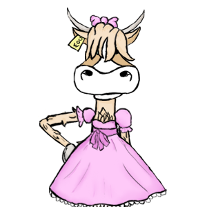
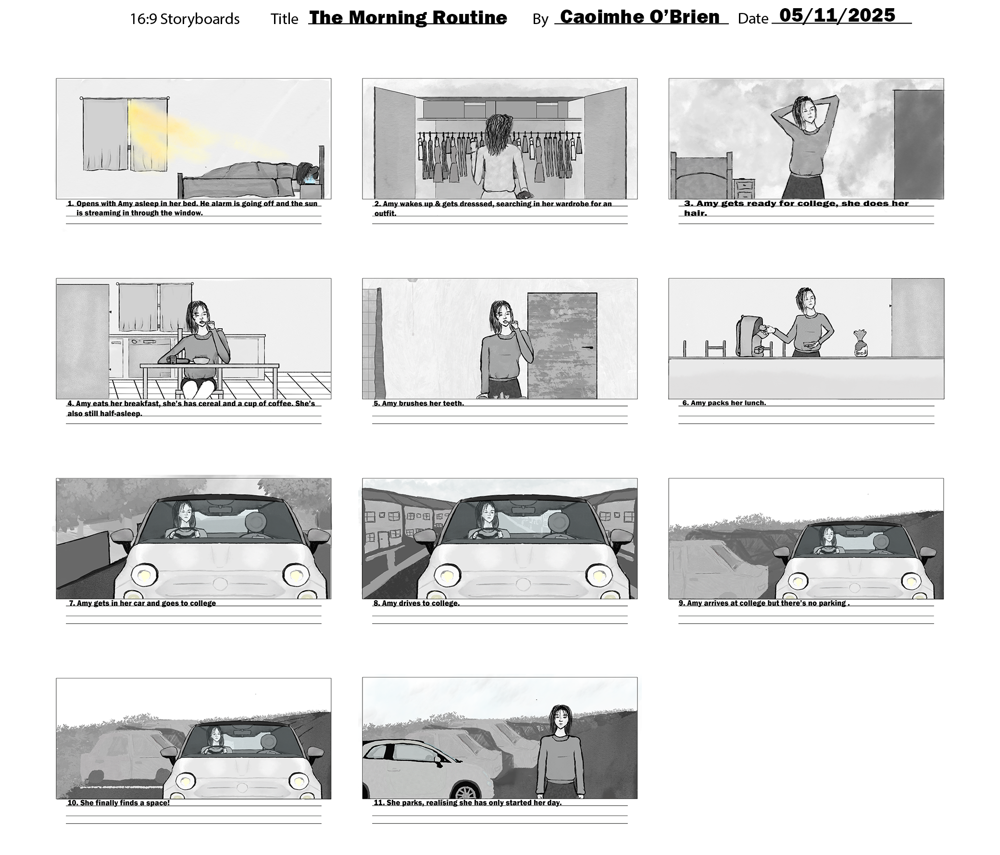
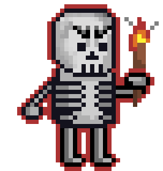
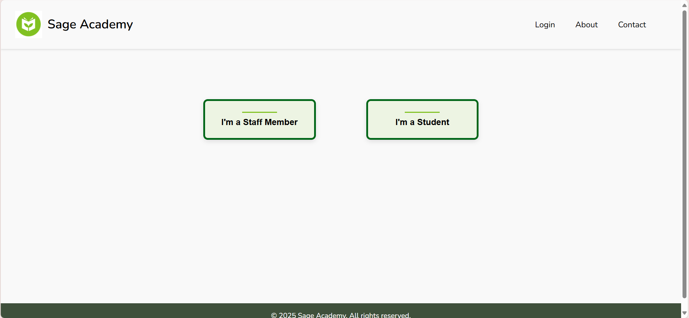
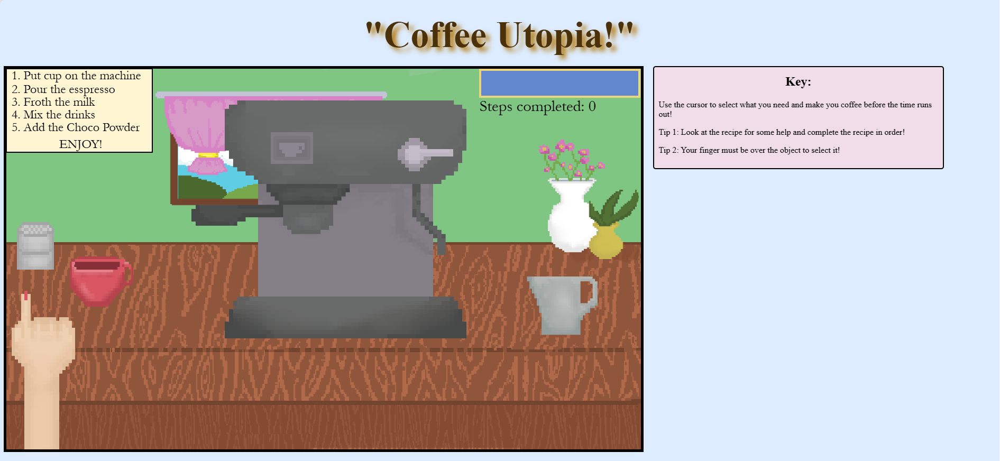
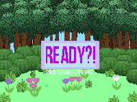
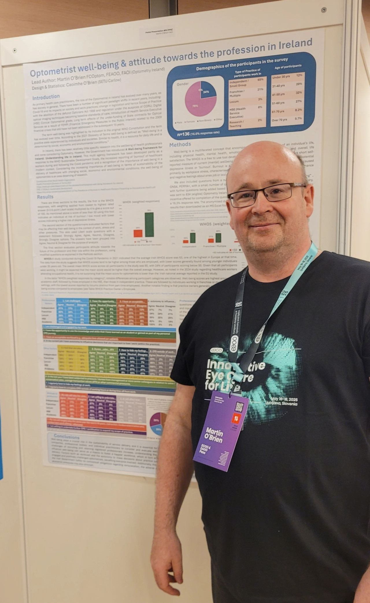

Concept Art

St Cuan for Dingle Animation
This is a character I made for a games sting for the 2026 Dingle Animation Festival.
Click to find out more!

Cow for Dingle Animation
This is a character I made for a games sting for the 2026 Dingle Animation Festival.
Click to find out more!

Backgrounds for Dingle Animation
These are backgrounds I made for a games sting for the 2026 Dingle Animation Festival.
Click to find out more!

Lili Lasourris
This is an original character for a concept art project that I am working on in my spare time.
Click to find out more!
Storyboards

Storyboard for Morning Routine
This is a storyboard I made for a 2D animation I made for one of my class in university using Adobe Animate.
Click to find out more!

Storyboard for Opera Singer
This is a storyboard I made for a 2D animation I made for one of my class in university using Adobe Animate.
Click to find out more!
Animations

Enemy Animations
This is a 2D animation I made in my second year of college for a Concept Art for Games module.
Click to find out more!
Websites
This Portfolio
Here is some of the process of creating this website.
Click to find out more!

Sage Academy
Here is a portfolio website I made in college last year but I have since reworked it.
Click to find out more!
Games

"Coffee Utopia" Game
Here is a short coffee shop game I made using HTML and JavaScript.
Click to find out more!
Miscellaneous

Game Assets
Here are some game assets that I created for a group project in 2nd Year of College.
Click to find out more!

Optometry Poster
Here is a poster that I assisted in creating in my personal time.
Click to find out more!
 These are primary sketches for St Cuan.
These are primary sketches for St Cuan. These are some ideas for St Cuan's staff. This did not make it into the final design or the game
These are some ideas for St Cuan's staff. This did not make it into the final design or the game

 Here is the end of the script with my notes highlighted.
Here is the end of the script with my notes highlighted.